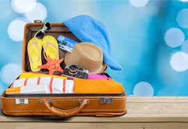

Не беріть із собою багато речей.
Звісно, якщо ви їдете на курорт класу “люкс”,
де на вечерю в ресторан щоразу треба приходити
в іншому вбранні, величезн а валіза зі зміною одягу
на всі 14 днів і ночей відпочинку може бути доречною.
Як свідчать соціологічні дослідження, дві третини
мандрівників повертаються з подорожі принаймні з
Тому ретельніше обирайте гардероб у подорож.
Розмінювати гроші в аеропорту можна,а інколи і треба
Прийнято вважати, що в аеропорту валюту міняють тільки
“лохи” й мандрівники-початківці, адже курс там може бути
дуже невигідним порівняно з пунктами обміну в місті.
Іноді так і є. Але частіше різниця дуже незначна,
а інколи її й узагалі немає. Натомість у місті ви
можете довго шукати, де обміняти гроші, або приїхати
в такий час, коли всі банки й пункти обміну вже зачинено.
Зрештою, якщо добиратися з аеропорту громадським транспортом,
вам знадобиться місцева валюта для оплати проїзду.

Дізнайтеся про місцеві звичаї та культуру.
Постарайтеся перед поїздкою знайти якомога
більше інформації про країну, в яку їдете.
Корисно знати, що в Німеччині у воскресіння
майже всі магазини не працюють, а в арабських
країнах в жодному разі не можна фотографувати жінок.